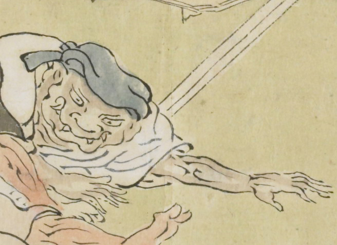

頭に青いかぶり物をした鬼。畳に寝転がるように腕をのばしている。白い衣服を身にまとい、口から数本の牙が出ている。
出典：親書誌：U426_nichibunken_0079：酒天童子絵巻；シュテンドウジエマキ／日付：2006／資源識別子：U426_nichibunken_0079_0008_0002
Copyright (c)2010- International Research Center for Japanese Studies, Kyoto, Japan. All rights reserved.